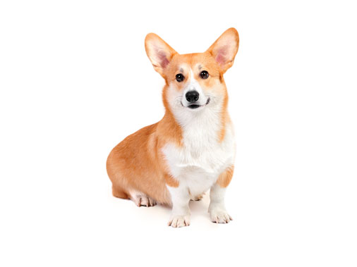
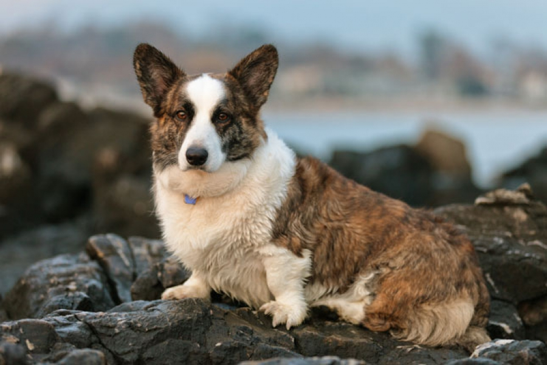

| 1.
|

|
Вельш Корги
Корги – собачки невысокого роста. Их тело довольно-таки длинное, а уши – большие. На свет они появились 3 000 лет назад. Эта порода особенно стала популярна в связи с тем, что ее обожает королева Великобритании Елизавета II.
высота в холке не выше 30 см;
вес до 15 кг кобели, до 12 – суки
глаза среднего размера овальной формы
уши стоячие
прикус прямой
окрас – желто-коричневый, белый (на груди, шее и конечностях)
Характер
Корги – умные собаки. Команды они схватывают на лету, мгновенно ориентируются и быстро адаптируются. Выучить собак можно всего за несколько недель, начиная со второго месяца жизни. Лучше всего щенков корги учить командам в юном возрасте. По мнению специалистов, корги доброжелательные, оптимистичны. Любят своих хозяев и их друзей. Дружат собаки и с детьми, корги всегда можно доверить малыша.
|
| 2.
|

|
Вельш Корги Кардиган (Великобритания)
КАРДИГАН-ВЕЛЬШ-КОРГИ (Cardigan Welsh Corgi), порода служебных собак. Кардиган-вельш-корги - старинная английская порода рабочих собак. Происходит от древней шпицеобразной собаки - шведского вальхунда. Известна в Южном Уэльсе с 10 века как собака, пасущая коров.
Характер
Лоб плоский, широкий.
Уши треугольные, стоячие, крупные.
Спина прямая.
Хвост длинной почти до земли, держится низко, похож на лисий.
Конечности короткие, чуть изогнутые.
Лапы большие, круглые, сжаты в комок.
Шерсть грубая, густая, короткая, с мягким подшерстком.
Окрас любой, кроме белого.
Дружелюбный, общительный пес хорошо приспособлен для жизни в доме, но требует продолжительных прогулок. Пригоден для сторожевой службы.
|